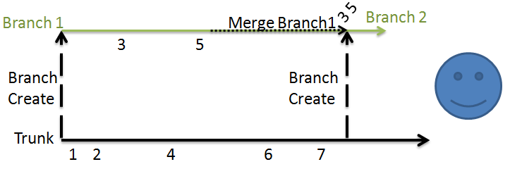
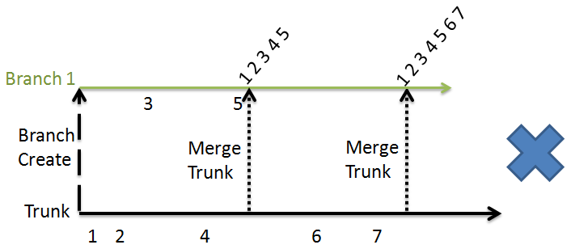

Fundamentals of version control, Subversion and FCM
This aims to explain the importance of:
How to use the tutorial
This tutorial has been designed to be used as a teach yourself guide to FCM.
Ideally the tutorial would be used in the following order:
- Fundamentals tutorial and practicals , pre-quiz section - this can be considered the starting point.
- Fundamentals quiz - a quiz to help you consider how you view your present understanding.
- Fundamentals tutorial and practicals , post-quiz section - background, basic principles and some best working practices.
- Essentials quiz - introducing the concepts that you will be encountering in the Essentials section.
- Essentials tutorial and practicals - this section is intended to provide the essential information for using FCM.
- Specfics quiz - introducing the concepts that you will be encountering in the Specifics section.
- Specfics tutorial and practicals this section is intended as an optional section with advanced uses of FCM.
The setup script which allows users to do the practicals is only needed for the Essentials tutorial and practicals and the Specfics tutorial and practicals. To do the tutorials and practicals for these section please run the set-up script prior to doing the tutorial and practicals to ensure that the correct set-up is in place. Details are at the top of both tutorial and practicals pages where the script is required.
First let's do the Fundamentals Quiz to see how much you already know and what we will need to focus on in this section, note there are no right or wrong answers for the first five questions.
Using version control
-
Introduction
- share work and encourage collaboration,
- track the progression and incremental changes to versions/revisions of work,
- allow multiple flavours of the some work to investigate the impact of a change,
- traceability of work, for example what version of the work was used and when,
- to revert a change,
- branch from a version,
- merge in changes
- and so much more.
- It is an incremental change tracking system.
- We can explore the changes at each change and recall a version using its revision number.
- It takes snapshots of the directory tree vs time and records only the incremental changes.
- A working copy, which is in fact, a local copy of a particular version of the repository is availiable for users to freely work on. Note managing the version control of the working copy and communicating changes is the responsibility of the user.
- Using copy-modify-merge allows each user of the repository to have their own personal working copy and they can work simultaneously and independently to modify their personal copies which can then be merged together later. Note it is the humans' reponsibility to merge the files correctly and resolve any conflicts by manually. This may mean choosing the correct file after discussions with any others editing the repository.
- Each change committed to the repository creates a new state of the filesystem tree (snapshot). This is called a revision number.
- The revision number is applied to the entire repository tree and not individual files and is therefore also known as the Global Revision Number. For example: at revision number N then a file may be the same as it was at revision number M but a different file was changed between the two revisions.
Why use a version control system?
Subversion
Subversion has some very good documentation, Version Control with Subversion, referred to in this training material as the Subversion book. It is recommended that you read this as it provides a good introduction to the basic concepts of version control. Please read Fundamental Concepts if you are not already familiar with Subversion. Specific topics to focus on are Copy-Modify-Merge for shared file systems and Global Revision Numbers.
Note that FCM working practices ensure that your working copy (a local copy of the repository's files and directories where you can prepare changes) always corresponds to exactly one revision.
Key Features of Subversion:
Version Control information
The Red bean book describes a version control system.
The basics of Subversion and where to learn more
- trunk v local "trunk" is the main/original version of the repository. You can work on a local/working copy of the trunk. When it is committed to the repository it is said to be the checked in version.
- Branching
Diagrams to explain ideas and concepts
<root>
|
|-- <project 1>
| |
| |-- trunk
| |-- branches
|
|-- <project 2>
| |
| |-- trunk
| |-- branches
|
|-- ...
The structure of a repository, note it contains multiple projects with their own trunk and branches.
<Trunk>
|
<Branch3>------|---------<Branch2>------<Branch1>
| |#1 | |
| | |#2 |
|#3 | | |
| |#4 | |
| | | |#5
| | | |#6
| | | |
| |#7 | |
|#8 | | |
| | |#9 |
|-----------|#10 | |
|#11---------| |
| |#12
|#13------------------------|
|
|#14
The concept of revision number. Every change that occurs results in an increase in the revision number, shown here by the #.
The diagram above represents the best working practice for merging. Here only the changes made in Branch 1 are merged into the new branch, Branch 2 which at a later date can be merged into the trunk. Therefore only the changes made on the branches and not the trunk changes are included in the log/changeset for the branch merge. For example, here only changes 3 and 5 are merged into the trunk. This makes applying/viewing/understanding changes associated with the branch easier.
The problem with this second method is that in Branch 1 all of the branch changes are mixed with the trunk changes. For example a merge of the branch would include changes 1-7 and not just the changes 3 and 5 that were made on the branch. This is unlike the best practice method where the changes are still separate and therefore it is easy to see what changes belong to the branch and what changes belong to the trunk.
Undoing changes: fcm revert v fcm merge --reverse --revision [M:N]
Local/working copy--->Made changes--->fcm st--->Issue--->fcm revert <problem file(s)> Local/workin copy--->Made changes--->fcm ci--->fcm st--->Issue--->fcm merge --reverse --revision [M:N]
Sometimes we make changes to a file or diectory and realise that we did not mean to make the change. What we do next depends on if we have commited the changes to the repository or if they are only in the local/working copy. More information on this follow and full details are included in the Essentials tutorial.
The above flow diagram explains what we can do depending on the situation.
<Trunk>
|
<L/W-C>--------|---------<Branch2>------<Branch1>
| | | |
| | | |
change | | |
| | | change
test | change |
| | | test and commit branch
commit------->| | |
| test and commit branch |
| | |
|--update--->| |
| | |
| change |
| | change
| test and commit branch |
| | test and commit branch
|----------------update---->|
|<------merge-Branch1-------|
| |
commit |
| |
| change
| |
| test and commit branch
|--update--->|
| |
|<---merge-Branch2
|
commit
Flow diagram of best working practice for local/working-copies and branches.
<Trunk>
|
<L/W-C>--------|------------------------<Branch1>
| | |
| | change
change | |
| | test and commit branch
test | |
| | <Branch of BranchA>-----|-----<Branch of BranchB>
commit------->| | | |
| change | |
| | | change
| test and commit bob | |
| | | test and commit bob
|------------------update-->| |
| | commit |
| |<-update------| |
| commit | |
| | | change
| | | |
| | | test and commit bob
| merge bob-------->| |
| | |
| commit |
| |-----update-->|
| | commit
| |<-merge bob---|
| commit
|<--merge branch------------|
|
commit
Flow diagram of best working practice for local/working-copies and branches with branches of branches (bob).
The rest of this tutorial focuses on the toolkit (wrapper) and working practices at the Met Office, FCM.
Basics of using an existing FCM repository
"local" is also known as the working copy and it is where a copy of the checked out trunk or branch is copied to for the user to develop.
Branching is "cheap", it is good practice to branch. We can branch from the trunk or a branch of the repository. Note we do not have to "recycle old branches" just create a new one. Branching let's us work in parallel with the trunk of a repository.
-
Scenario 1
-
Scenario 2
- They could see that there is a conflict when they try to merge.
- FCM informs them of the type of conflict. Which helps them resolve it.
- FCM tools can be used to help resolve the conflict.
-
Scenario 3
-
Scenario 4
-
Scenario 5
-
Scenario 6
-
Scenario 7
- Only locally as it is only ever for personal use and it is small.
- On a shared storage area for the group to all work on.
- As part of a FCM project area as all need to be able to access it, note the repository can have limited commit access which is done at set-up and can be altered as appropriate via the Trac pages (see the Specific Trac tutorial for more on Trac).
What is FCM?
FCM was designed to be a helpful and simple interface for users to version control work which is based on and built around Subversion.
FCM is a toolkit (wrapper) for Subversion and adds features to support the user experience of managing code and work easier.
FCM simplifies and enhances working with Subversion to provide a user friendly interface to Subversion therefore allowing users to effectively version control there work.
FCM can be used, if the site is setup, to link together Subversion and Trac. Trac is an environment by which projects can be hosted, by the site, and used to record information and tickets/issues.
FCM user guide
FCM is best used via the command line and is better not to interchange it with Subversion. FCM uses the site repositories, where the code can be managed in local repositories.
Repositories
FCM uses repositories for centrally storing data for a given project.
Such repositories work in much the same way as most compute systems where they work with a filesytem tree consisting of directories and files.
Multiple users can connect to a repository and depending on the permissions associated with the repository they can read, write to or execute code from a local/working copy a repository.
This allows for collborations therefore encouraging sharing, developing and using code for a common purpose.
One of the key aspect of a version control system is that it records the incremental repository changes.
The version control system records each version change and who made the change to the repository.
As version control system record each change and not just the last (most recent) then a user can work with a specified version of the code from the repository.
Therefore a user does not need to always work with the most recently lodged (committed) code but can work with an alternative version, which can be helpful for comparisons of changes with older repository versions of the same code.
This functionality also allows users to explore what the repository contained
at a point in time and who has made changes at what time to the repository.
Users can view specific commit messages via a number of techniques, for example
fcm log along with a revision number, Trac, etc.
fcm log will be discussed further in Essentials
tutorial and Trac in the Specifics tutorial.
Scenarios
What, why, how, who?
Nicholas, Danny and Dorris are all working on a new project where they need to develop joint code and a joint webpage.
Nicholas and Danny want to work on a file one at a time and then pass around the file to the next person when they have finished the changes they want to make at that moment in time.
Dorris wants to use a version controlled repository so that they can all work on the code together and therefore not have to wait for the previous person to have finished.
There will be no chance of conflicts.
Nicholas and Danny cons:Someone may make a change that the first person does not agree with.
The code will take longer to develop.
Changes cannot be tracked as easily.
Dorris pros
Simultaneous code development, therefore speeding up the project.
Full version controlled, with who did what when.
Fully traceable.
Dorris cons
They will have do manually resolve any conflicts on merging, however this is the same as Nicholas and Danny's suggestion except here they will be able to see how their code changes interact with each other. This is unlike Nicholas and Danny's suggestion where they will make changes pass the code on and then will probably have to pass around a few times to agree on the code changes.
Did you get all the reasons above and think of others?
Daisy has been developing some code, she now wants help from Mike to develop the code further using Mike's expertise.
Mike has taken a copy of the code and Daisy is still developing it.
Mike tries to merge his code in to the trunk version that Daisy has committed but the code has been updated and there is a conflict.
Using FCM they can see the conflict and resolve it using a built in tool.
Benifits of using FCM:
Tim and Alan need to re-run an older version of some code as a customer, DarkStar comics, wants to reproduce data from three years ago as they have lost the data and need to run the code with the setting from three years ago for the Inland Revenue.
Tim is using a version control system and can extract the code from the correct time period and reproduce the data.
Alan did not use version control and just changes the code every time the rates changed.
He has to look-up the correct values and rewrite the code before he can reproduce the data.
If his notes aren't complete he will have to try and remember the correct settings.
Marsha and Twist work in fashion marketing. Marsha has provided Twist with some market changes forecasting code from a version control repository.
The code forecasts the supply and demand trend for the coming month based on previous years' data and trends.
Twist made some changes to her code in her local/working copy and ran the code.
This produced some very unrealistic results and Twist realised that she had made some fundamental mistakes.
As she had not committed her changes to the version control repository then she can just revert her local changes and start again.
Following on from Scenario 4 Twist this time made the changes and the code failed but this time she had committed the code to the repository.
It is all okay as she can use version control to go back to the last checked in version that worked as expected.
A group of software engineers, Shaun, Ed, Liz, Dianne and David, are working on project to improve the scheduling and running of weather forecast models.
They are all continuously getting the code from a version controlled repository and making changes, testing it and if it improves the system they commit it back to the trunk for others to then use.
The others in the group can then "update" their local copy to the trunk version using the FCM tool provided, fcm update.
Following on from Scenario 6 at a later date David decides that he wants to deviate from the trunk and is not sure it will work so decides to go it alone, but he may want to apply his change to the trunk at a later date.
David can do this by branching from the trunk, making changes to his branch and testing them.
David can then either delete the branch if the results are not improved or he can merge his branch changes into the up to date trunk when he is happy that the changes are suitable.
General configuration
Editor Configuration
Configure an editor for Subversion
Subversion will open an editor when we try to create a branch or commit changes to the repository as it generally requires a commit log message to accompany the change.
The default editor is vi.
To change the default editor set the environment variable SVN_EDITOR.
The editor-cmd option is in the [helpers] section of the user's ~/.subversion/config file.
For further information on this please see the file.
Setting-up your own repository
General Guidance
Always consider how large the repository will grow to.
With this in mind carefully consider where the repository is to be located. For example:
At some sites the FCM repository is backed up so a personal back-up is not required. Please check with your local FCM admin team to find out if you need to make back-ups.
Any local repository that has been personally created will not necessarily be backed up so the responsiblility is on the person.
Creating your own central FCM repository
Normally, you would contact your local FCM admin team for help with setting up the initial central repository.
A personal repository can be created as follows:
First create a directory in your $HOME directory to work on the FCM tutorial material:
cd mkdir ~/fcm_tutorial cd ~/fcm_tutorial svnadmin create repository
This creates a repository called repository using the
svnadmin tool.
Here we will be using commands that have not been fully explained yet. They will all be covered in the Essentials tutorials.
Now run the following commands to set-up the rest of the repository for the Fundamentals tutorial:
fcm mkdir file:///$HOME/fcm_tutorial/repository/fundamentals -m 'New project fundamentals'
using the -m option means that we do not have to add the comment
to the editor which is involved by the command for the commit message.
We can see from the command that we can use mkdir to make the
directory like we would in Linux. Many of the commands that we can use are
the same as we would use in Linux to help make it easier for the user.
The returned message is:
Committed revision 1.
Please run the following:
fcm mkdir file:///$HOME/fcm_tutorial/repository/fundamentals/trunk -m 'New folder fundamentals/trunk' fcm mkdir file:///$HOME/fcm_tutorial/repository/fundamentals/branches -m 'New folder fundamentals/branches'
The returned messages are:
Committed revision 2.
Committed revision 3.
respectively.
fcm ls file:///$HOME/fcm_tutorial/repository/fundamentals
This lists the changes to the repository and returns:
branches/
trunk/
Now to make our working copy, which is not the same place the repository.
For this we can use the Linux command mkdir -p to create
the directory and the path to it if it does not already exist:
mkdir -p ~/my_fcm_tutorial/fundamentals
Checkout the working copy using the FCM command fcm co:
fcm co file:///$HOME/fcm_tutorial/repository/fundamentals/trunk ~/my_fcm_tutorial/fundamentals
Returns:
Checked out revision 3.
We will be using the tutorials repository for the Essential tutorials. This is an example of how we would set-up our own repository.
Setting-up the tutorial repositories
Please run the following tutorial repositories script by running the following command in a terminal
~/kerryday/fcm_tutorial_docs/bootstrap/docs/repos/tutorial_repo_setup
this will set-up the repositories that you will need for all of the tutorials.
WARNING: This script adds and creates if required keywords the
file ~/.metomi/fcm/keywords.cfg if the file already exists it copies the
orginal to ~/.metomi/fcm/keywords_orig1.cfg.
If you rerun the script it will do the same but re-number older versions of the
configuation file keeping all version.
Please monitor the number of these that you have and tidy up the folder
periodically keeping only the desired versions.
If at any stage the repository gets corrupted then we can start again:
cd # Warning this tears down the whole repository to start from scratch. rm -rf ~/fcm_tutorial rm -rf ~/my_fcm_tutorial # The tutorial repositories script tutorial_repo_setup
All of the tutorial sections are separate and do not depend on each other therefore it is safe to teardown the repositories. The only issue may be that the revision number do not match, but that is not important for the tutorials.
| # | Answer |
|---|---|
| 6 | C |
| 7 | B |
| 8 | D |
Now lets do the Essentials Quiz to see how much you already know and what we will need to focus on in the next section. Don't worry if you don't know all the answers yet, we will learning more in the next tutorial.
This document is released under the British Open Government Licence.